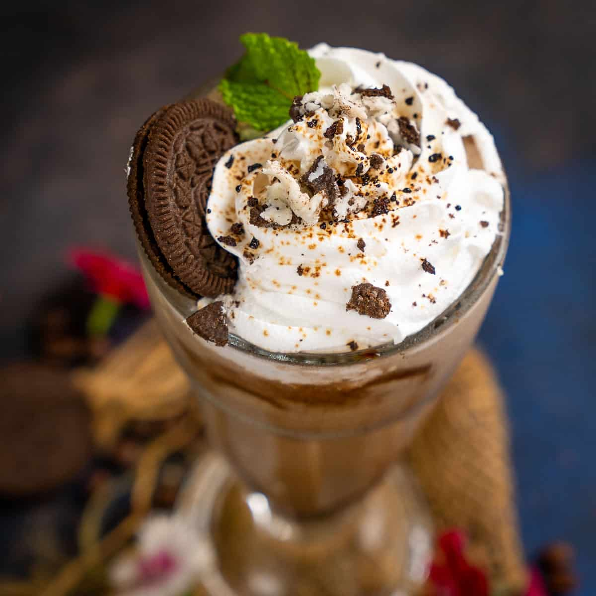

Oreo Cold Coffee is a chilled summer beverage where your regular cold coffee gets a makeover with the
addition of Oreo cookies.It is filling and surely gives instant relief from the heat in summers. Instant
coffee powder and Oreo biscuits are blended with milk and a few other ingredients to make this
cafe-style version of cold coffee. If you are wondering what are Oreos? They are sandwich cookies,
consisting of two chocolate-flavored biscuits with a sweet cream filling in between. If you have tried
my classic cold coffee recipe and liked it, then this cold coffee with oreo biscuits will also become
your new favorite. The addition of Oreos gives the classic cold coffee a nice chocolaty and creamy
texture and makes it even more delicious. Icy cold coffee is simply the best beverage to enjoy on a hot summer day. Even though I tend to be more of a tea drinker, I do love a good cup of coffee occasionally and this cafe-style blended coffee drink is my favorite! Similar to what you find at nearly every local coffee shop, this shake-like cold coffee recipe is made with sugar and milk blended together with ice. It creates a refreshing and rich beverage, with a delightfully frothy layer on top. The taste is like a lighter Frappuccino or Frappe but you can add flavored syrups to recreate nearly any blended iced coffee flavors.I have used instant coffee powder to make this a quick and easy recipe. You could use either the powdered or granular instant coffee.You can also make delicious cold coffee using traditionally brewed Filter Coffee or espresso. Prepare your drip coffee or espresso per usual, and allow it to cool (at room temperature or in the refrigerator) before using to make icy blended coffee shakes.
